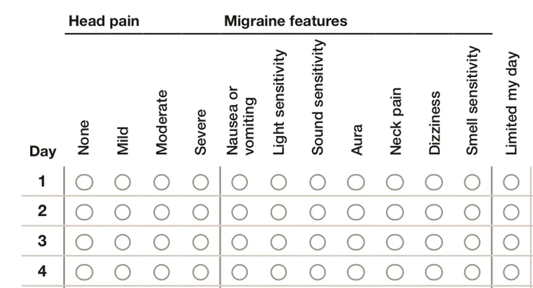

Free printable
Headache diary
One page covers a month and ends with the counts your doctor will ask for. Made by a headache specialist.
What to record
One line a day.
- Head pain: none, mild, moderate or severe.
- Migraine features, like nausea, light sensitivity or aura.
- Limited my day: whether it kept you from usual activities.
- As-needed medicine you took, by name.
- Period days, if you have periods.

Day type
Mark each day M, H or S.
The key at the bottom of the page uses the same rules as the Ember app. What counts as a migraine day
Day type: write M, H or S
- M
- Migraine day: head pain with 2 or more migraine features, symptoms without head pain that limited your day, or a migraine medicine taken with pain or symptoms.
- H
- Headache day: head pain with fewer than 2 migraine features.
- S
- Symptom day: symptoms without head pain that didn’t limit your day.
Medicine days
Count the days you took medicine.
Taking as-needed medicine on too many days can make headaches more frequent.1
10+
days a month of migraine medicines like Imitrex
15+
days a month of pain relievers like ibuprofen
These limits apply over more than 3 months. Combination pain relievers like Excedrin count at 10.

On your phone
Ember keeps this diary for you.
Log a day in 10 to 20 seconds. Ember counts your migraine days and builds your doctor a report they’ll actually use.
Sources
- Headache Classification Committee of the International Headache Society. The International Classification of Headache Disorders, 3rd edition. Cephalalgia. 2018;38(1):1–211. Section 8.2, Medication-overuse headache. ichd-3.org/
- Ailani J, Burch RC, Robbins MS. The American Headache Society Consensus Statement: Update on integrating new migraine treatments into clinical practice. Headache. 2021;61(7):1021–1039. doi.org/10.1111/head.14153
Reviewed by a practicing headache specialist, October 17, 2026.